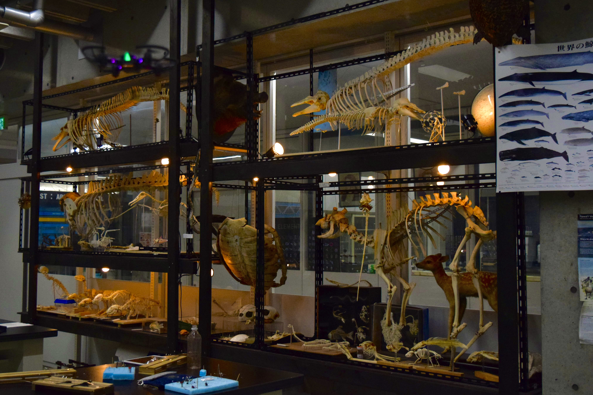

TOP
トップ
BIOLOGY LABORATORY
生物室
CHEMISTRY LABORATORY
化学室
GROUND
校庭
QUESTION
アンケート
BIOLOGY LABORATORY
360° パノラマ写真
理科部では、様々な標本や製作物を展示しています。今年は一般の皆様に直接展示をご覧いただけないため、生物室の360° パノラマ写真を公開します。理科部の展示の雰囲気が伝われば幸いです。
1. 入口
2. 昆虫調査班 ①
3. 昆虫調査班 ②
4. 水棲生物調査班 ①
5. 水棲生物調査班 ②
6. 脊椎動物研究班 ①
7. 脊椎動物研究班 ②
8. 天文班
9. 技術班
1. 入口
2. 昆虫調査班 ①
3. 昆虫調査班②
4. 水棲生物調査班 ①
5. 水棲生物調査班 ②
6. 脊椎動物研究班 ①
7. 脊椎動物研究班 ②
8. 天文班
9. 技術班